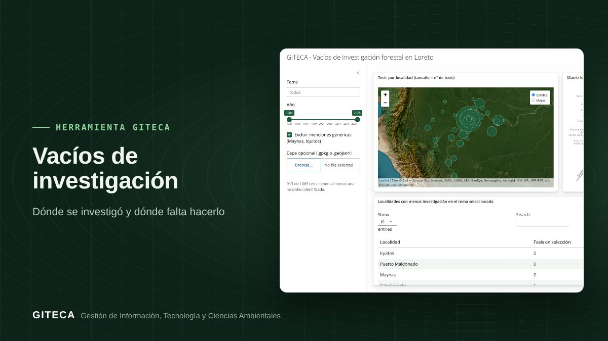

¿Dónde falta investigar en Loreto? Un mapa para encontrar vacíos de conocimiento
Mapa de tesis forestales por localidad y matriz localidad × tema para ver qué zonas y qué temas casi no se han estudiado.
Abrir la app ↗Gratis y en el navegador.

¿Tu próxima investigación va a repetir lo que ya se hizo, o va a llenar un vacío?
La mayoría de las tesis se concentra cerca de Iquitos y de las vías de acceso. Esta app ubica las tesis forestales de la UNAP por localidad y cruza localidades con temas, para mostrar dónde hace falta investigar.
Antes y ahora
El proceso de siempre
- Revisar tesis una por una para saber dónde se hicieron.
- Ubicar las localidades a mano en un mapa.
- Cruzar temas y lugares en una hoja de cálculo.
Con la herramienta
- Eliges un tema y un periodo.
- El mapa muestra cuántas tesis hay en cada localidad.
- La matriz localidad × tema y la tabla de localidades con menos tesis señalan los vacíos.
Tiempos de referencia estimados por el equipo GITECA; varían según el tamaño del área y la experiencia del usuario.
Qué hace
- Mapa de tesis por localidad, con filtros de tema y año.
- Matriz localidad × tema.
- Lista de localidades con menos investigación en el tema elegido.
- Opción de cargar tu propia capa (GeoJSON o GeoPackage).
Para quién es
Empieza en 3 pasos
- Abre la app (la primera carga tarda 1 a 2 minutos).
- Elige el tema y los años.
- Revisa el mapa y la tabla de vacíos.
Vacíos de investigaciónGratis y en el navegador.
Abrir la app ↗
Ten en cuenta: Las coordenadas son aproximadas, a nivel de localidad, y se detectan en el título o el resumen de cada tesis. ¿Necesitas adaptarla a tu proyecto o capacitar a tu equipo? Escríbenos.